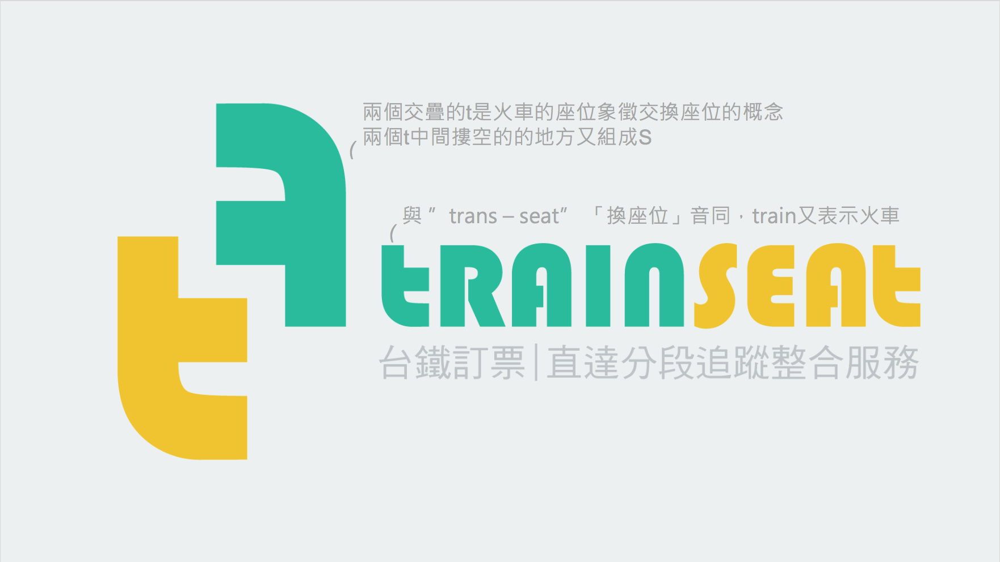
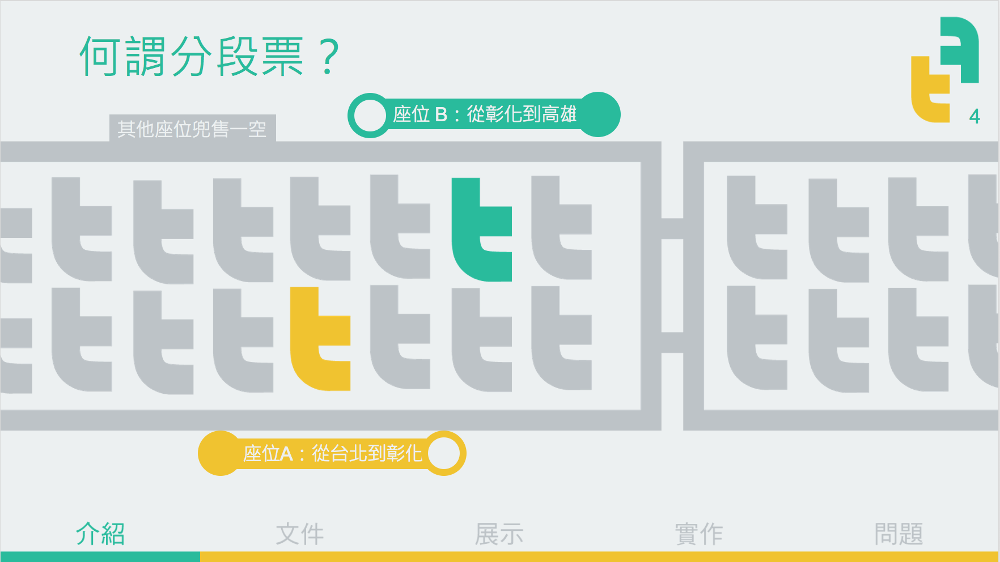
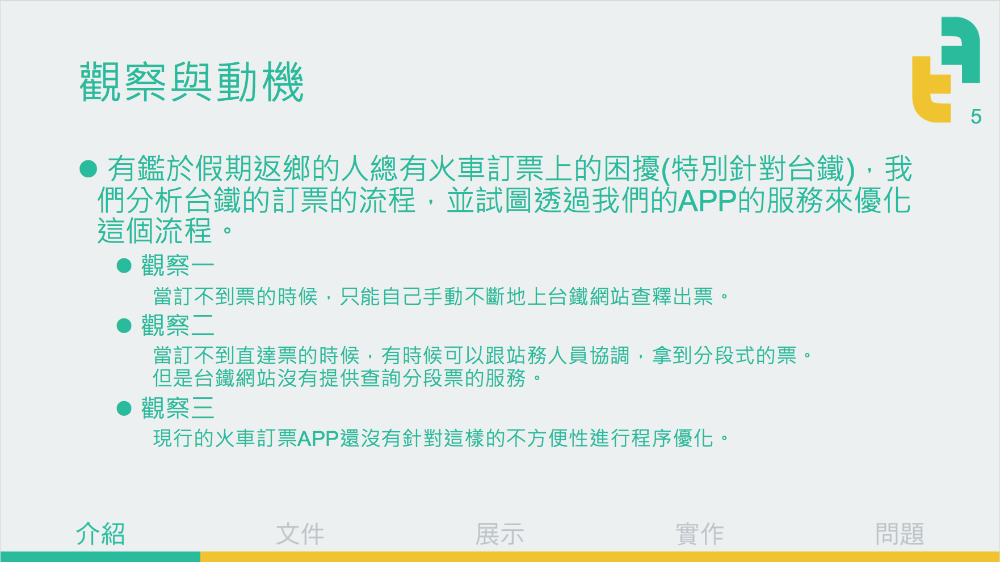
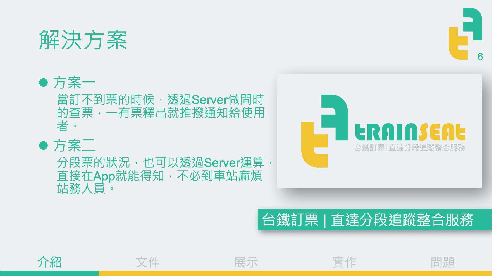
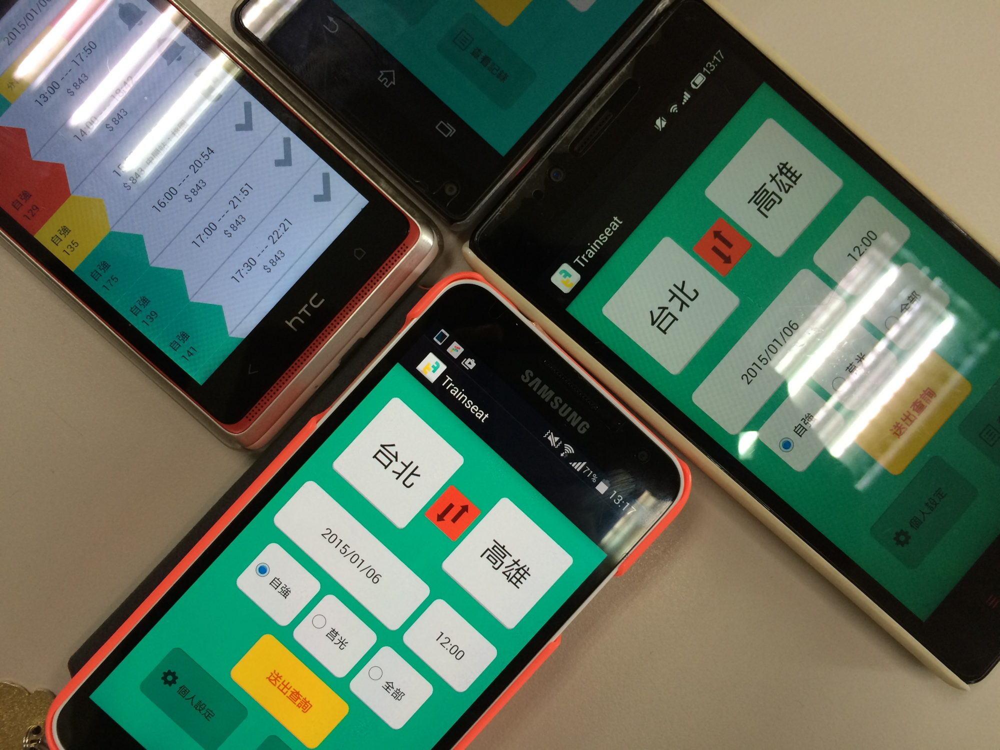

Lynda Lin (Lin Yung-Ta)
TRAINSEAT
TRAINSEAT
台鐵訂票｜直達分段追蹤整合服務
詹宗霖、詹孟穎、王友琳、盧業達、陳品豪、周柏豪、呂翊瑄、林湧達
2014 Fall Software Engineering Final.
Responsibilty: UI & Interactive Design
軟體工程的期末專案，應該是在學時期最多人共同寫程式的經驗，透過軟體工程的設計分工模組化，讓八個人合作無間。 開發過程因為詳盡的規劃所以大幅縮短，各類圖表詳見下面所附的投影片。
[Slide]
Video Demo

TrainSeat的起源

何謂分段票

TrainSeat要解的問題

TrainSeat提供的服務
